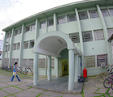

A FATEC-BS é um órgão estadual de ensino superior que oferece os cursos de Análise e Desenvolvimento de Sistemas, Informática para Gestão de Negócios, Gestão Empresarial, Sistemas para Internet e Logística para Transportes.
Os cursos ministrados são concebidos, desenvolvidos e ministrados visando atender segmentos atuais e emergentes do mercado de trabalho. Os currículos são flexíveis, compostos por disciplinas de formação básica, tecnológica, específica, de acordo com a área de atuação do profissional a ser formado, com carga horária em torno de 2.700 horas.
Estruturalmente, o ensino se apóia em projetos reais, estudo de casos e em laboratórios específicos aparelhados para reproduzir as condições do ambiente profissional, permitindo ao futuro tecnólogo participar de forma inovadora nos vários trabalhos de sua área.
Desde 1987 a Faculdade de Tecnologia Rubens Lara (anteriormente Faculdade de Tecnologia da Baixada Santista) oferece o curso de Tecnologia em Processamento de Dados que foi reconhecido através da Portaria 354, de 9 de março de 1994, M.E.D. (Ministério da Educação e do Desporto). A FATEC RL passou a oferecer, desde 2003, os cursos superiores de Informática para a Gestão de Negócios e Logística para Transportes como cursos de implantação.
"Formar competências profissionais adequadas às necessidades dos diferentes mercados de trabalho com o propósito de contribuir para a melhoria do padrão de vida do trabalhador e para a elevação da qualidade e produtividade de processos, produtos e serviços".
| Curso | Manha | Tarde | Noite |
|---|---|---|---|
| ADS | 40 | - | 40 |
| GE | 40 | - | - |
| GP | 40 | 40 | - |
| LG | - | 40 | |
| SI | 40 | - | - |
Baixe aqui o calendário do segundo semestre da Fatec-rl
FATEC Baixada Santista - Rubens Lara
Av. Bartolomeu de Gusmão, 110 - Aparecida
Cep: 11045908 - Santos / SP
Telefone: (13) 3227-6003
http://www.fatecrl.edu.br